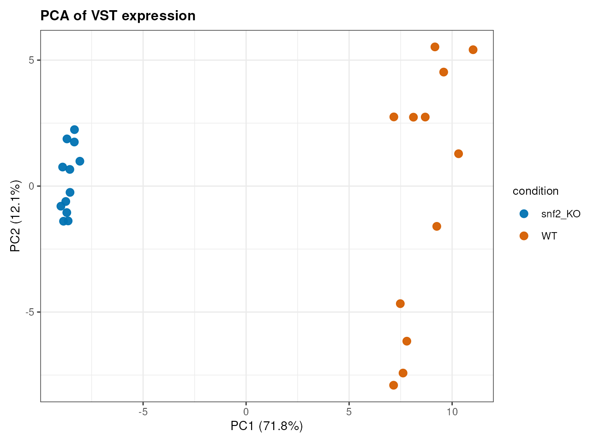
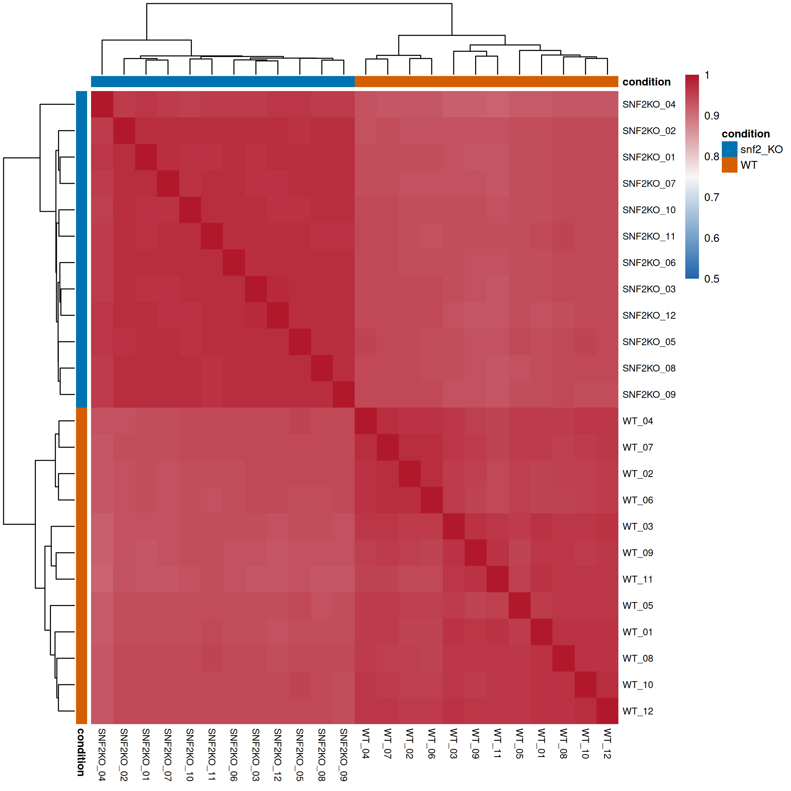
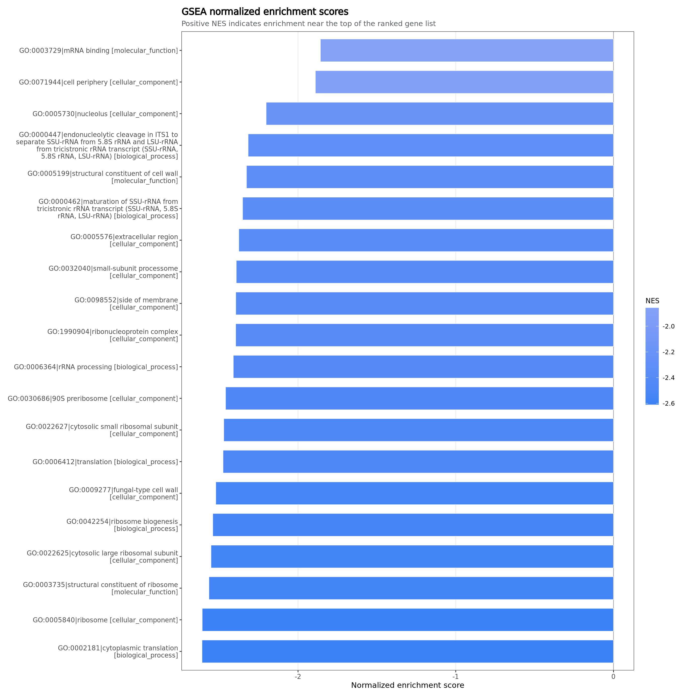

Composable subflows
可组合子流程
Reference preparation, de novo assembly, expression quantification, differential expression, enrichment, alignment, counting, QC, and reporting remain separately testable.
参考构建、无参组装、表达定量、差异表达、富集、比对、计数、QC 和报告都保持独立可测试、可复用。
TAFFISH Flow SuiteTAFFISH 流程套件
This portal explains the TAFFISH RNA-seq flow family, including the reference route, the optional alignment evidence branch, and the explicit de novo route for projects without a reliable reference genome.
这个门户用于解释 TAFFISH RNA-seq 流程家族，包括有参标准路线、可选比对证据分支，以及面向缺少可靠参考基因组项目的显式无参路线。
Reference mode remains the default. De novo analysis is enabled only with an explicit --mode denovo and requires user-provided protein and GO resources for annotation-derived enrichment.
有参模式仍是默认路线。无参分析必须显式使用 --mode denovo 开启，并需要用户提供蛋白数据库和 GO 映射资源，才能进行注释派生富集。
The suite is a transparent route family for bulk RNA-seq, not a large DAG engine. Each flow is an installable TAFFISH command with explicit inputs, outputs, logs, and provenance.
这套流程是 bulk RNA-seq 的透明路线家族，而不是大型 DAG 工作流引擎。每个流程都是可安装的 TAFFISH 命令，带有明确输入、输出、日志和溯源文件。
Reference preparation, de novo assembly, expression quantification, differential expression, enrichment, alignment, counting, QC, and reporting remain separately testable.
参考构建、无参组装、表达定量、差异表达、富集、比对、计数、QC 和报告都保持独立可测试、可复用。
rnaseq-standard-flow 0.2.0-r2 connects the stable subflows from FASTQ inputs to a final bilingual project report in reference or de novo mode.
rnaseq-standard-flow 0.2.0-r2 可以在有参或无参模式下，把稳定子流程从 FASTQ 输入串到最终双语项目报告。
The yeast SNF2 cases show the actual output layout, plots, linked QC reports, interpretation guides, and provenance produced by both routes.
yeast SNF2 案例展示两条路线真实生成的目录结构、图表、QC 子报告链接、解读指南和溯源记录。
Two public reports use the same biological project to demonstrate the reference and no-reference routes. This makes the differences in feature space, QC evidence, and interpretation boundaries easier to inspect.
两个公开报告使用同一生物学项目分别展示有参与无参路线，便于比较两者在特征空间、QC 证据和结果解释边界上的差异。
Genome and annotation driven route with Salmon/tximport expression, DESeq2, enrichment, optional alignment evidence, and a bilingual report.
基于基因组和注释的路线，包含 Salmon/tximport 表达定量、DESeq2、富集分析、可选比对证据和双语报告。
No-reference route with transcriptome assembly, transcript-level quantification, homology annotation, annotation-derived enrichment, and final reporting.
无参路线，包含转录组组装、转录本层面表达定量、同源注释、注释派生富集分析和最终报告。

Reference PCA有参 PCA

De novo sample correlation无参样本相关性

De novo GSEA NES无参 GSEA NES